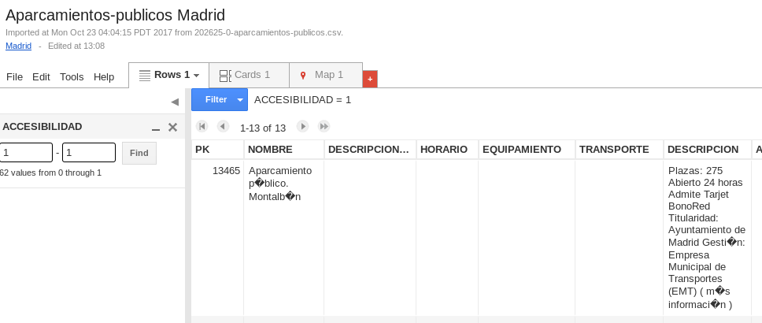

Antes de las tablas
Los conjuntos de caracteres
Codificación
O latin1/iso8859-1/iso8859-15
O UTF8
Generalmente, los programas que uno va a usar no van a dar problemas, sobre todo si descargamos cosas de la web. Si copiamos/pegamos sí puede haber algún problema, o si guardamos con un programa y queremos procesar con otro programa. En general, casi todo el mundo va a usar utf8 (que utiliza varios bytes por cada carácter), pero algunos conjuntos de datos abiertos pueden usar latin1 (sin €) o iso-8859-15 (con el símbolo del €). Si trabajas con el navegador, la información de la página te va a dar con qué conjunto de caracteres se está trabajando.
Formatos de datos
En general, tablas
Formatos de programa
Excel, LibreOffice Calc
Ubicuos pero difíciles de automatizar
Formatos abiertos ✓
Generalizados en portales de datos
abiertos
Fáciles de automatizar
Valores separados por cosas
CSV, TSV
Para datos estructurados
Este es el ejemplo que yo voy a
usar. Podéis usar cualquier otro, pero casi cualquiera (al
menos de ese portal) va a tener el mismo problema de codificación
¡👁 con la codificación!
Consultar como guardar con codificación UTF-8
Se puede tratar directamente
Yo no he logrado hacer nada con Data Prep, pero igual es cosa mía...
Usando Google Fusion Tables
O Tablas Dinánicas
Subir tabla
Crear mapa no
"Mapa de calor"
Fusion Tables para operaciones
básicas Herramientas → Seleccionar
columnas
Filtro → Seleccionar columna →
Palabra
Sólo 13 de los 63 aparcamientos en Madrid son
accesibles

Ejercicio : buscar fuente de
datos abiertos y conseguir un titular usando Tablas
Dinámicas
Programar te permite almacenar paso a
paso la operación que vas a hacer, trabajar con varios
ficheros simultáneamente, crear "flujos" complejos de
trabajo y, sobre todo, operar de forma totalmente
automática, incluso de forma diaria, por ejemplo. En
muchos casos va a haber datos relativamente conocidos que
estén incluso como parte de bibliotecas de un lenguaje de
programación; ejemplo tonto: Python tiene una biblioteca que
te deduce género de nombre.
import csv
import requests
import re
aparcamientos = requests.get('http://datos.madrid.es/egob/catalogo/202625-0-aparcamientos-publicos.csv').text
parkingreader= csv.reader(aparcamientos.split("\n"),delimiter=';',quotechar='"')
no_vacios = list( filter( lambda p: p, parkingreader))
columnas = no_vacios[0]
publicos = list( filter( lambda p: re.search(r"público",p[1]), no_vacios))
with open("exclusivo-publicos.csv", "w") as csvfile:
parkingwriter=csv.writer(csvfile,delimiter=";",quotechar='"')
parkingwriter.writerow(columnas)
parkingwriter.writerows( publicos )Todo el proceso completo, automatizado
y repetible fácilmente por cualquiera. También se puede
hacer paso a paso en la línea de órdenes y examinar
variables o hacer cualquier tipo de operación.
Ejercicio
Crear un programa
similar para el conjunto de datos con el que
trabajaremos. Colaborativamente o una versión por miembro del
equipo. Subir a GitHub y comparar.
Las llaves del aparcamiento
import csv
import requests
import re
aparcamientos = requests.get('http://datos.madrid.es/egob/catalogo/202625-0-aparcamientos-publicos.csv').text.split("\n")
no_vacios = list( filter( lambda p: len(p)>2, aparcamientos))
columnas = no_vacios[0].split(";")
parkingreader= csv.DictReader(no_vacios,fieldnames=columnas,delimiter=';',quotechar='"')
aparcamientos_diccionario = list(parkingreader)Un aparcamiento en particular
OrderedDict([('PK', '13470'),
('NOMBRE', 'Aparcamiento mixto. Arquitecto Ribera'),
# ...
('ACCESIBILIDAD', '0'), #...
Diccionarios = pares clave/valor
>>> votos_aqui = { "DP": 18071, "partido" : "PU", "votos": 3015 }
>>> votos_aqui
{'DP': 18071, 'partido': 'PU', 'votos': 3015}
>>> votos_aqui["votos"]
3015
Para trabajar con tablas, es más fácil
recordar el nombre que el número de columna que
ocupa
Componiéndolos en tablas
>>> votos_alla = { "DP": 32071, "partido" : "PAM", "votos": 1234 }
>>> todos_votos = [ votos_alla , votos_aqui ]
>>> todos_votos[0]["DP"]
32071Diccionarios en ficheros: JSON
JSON almacena datos con cualquier estructura
Cierra comillas a lo tonto "
Estructuras complejas
>>> votos_aqui = { "DP": 18071, "partido" : "PU", "votos": 3015 }
>>> votos_alli = { "DP": 33071, "partido" : "UUU", "votos": 777 }
>>> votos_todos = { "votos": 33333 }
>>> datos = { "distritos": [votos_aqui, votos_alli], "todos": votos_todos}
>>> datos
{'distritos': [{'DP': 18071, 'partido': 'PU', 'votos': 3015}, {'DP': 33071, 'partido'
: 'UUU', 'votos': 777}], 'todos': {'votos': 33333}}
JSON es el formaot universal de almacenamiento de
información, porque permite estructurarla de forma arbitraria y dar
cualquier tipo de contenido, no necesariamente tabular. También
puede procesarse más fácilmente. Si vas a trabajar con un API (lo
que no nos va a dar tiempo a ver), lo más probable es que use este
formato; también muchos portales de datos abiertos lo usan e incluso
algunos "leaks" como el de Ashley-Madison. Y sea
como sea, también es un formato muy práctico para almacenar la
información de forma que sea fácil trabajar con ella más
adelante. Por contra, es poco "visible" (aunque no es imposible) y
"editable" (pero tampoco lo es). Se puede convertir fácilmente desde
cualquier otro formatl.
De Python a JSON
>>> import json
>>> json.dumps(datos)
'{"distritos": [{"DP": 18071, "partido": "PU", "votos": 3015}, {"DP": 33071, "partido
": "UUU", "votos": 777}], "todos": {"votos": 33333}}'
Ejercicio Diseñar una estructura de datos y guardarla en JSON. Observar cómo se escriben los diferentes datos.
Leyendo JSON
Hay que "leer" la estructura para averiguar como procesarla.
JSON facilita el procesamiento
#!/usr/bin/env python3
import json
import requests
aparcamientos_json = requests.get('http://sl.ugr.es/parking_json').text
aparcamientos = json.loads(aparcamientos_json)['@graph']
aparcamientos_accesibles = list( filter(lambda p: p['organization']['accesibility'] == '1', aparcamientos))
print(json.dumps(aparcamientos_accesibles))Pero hay quien prefiere CSV
aparcamientos_columnas = list(map( lambda p: [p['title'],p['location']['latitude'],p['location']['longitude']], aparcamientos_accesibles ))
with open("aparcamientos-limpio.csv", "w") as csvfile:
parkingwriter=csv.writer(csvfile,delimiter=";",quotechar='"')
parkingwriter.writerow(["nombre","latitude","longitude"])
parkingwriter.writerows( aparcamientos_columnas )Ejercicio Extraer información de JSON y guardarla en CSV para luego procesarla y visualizarla